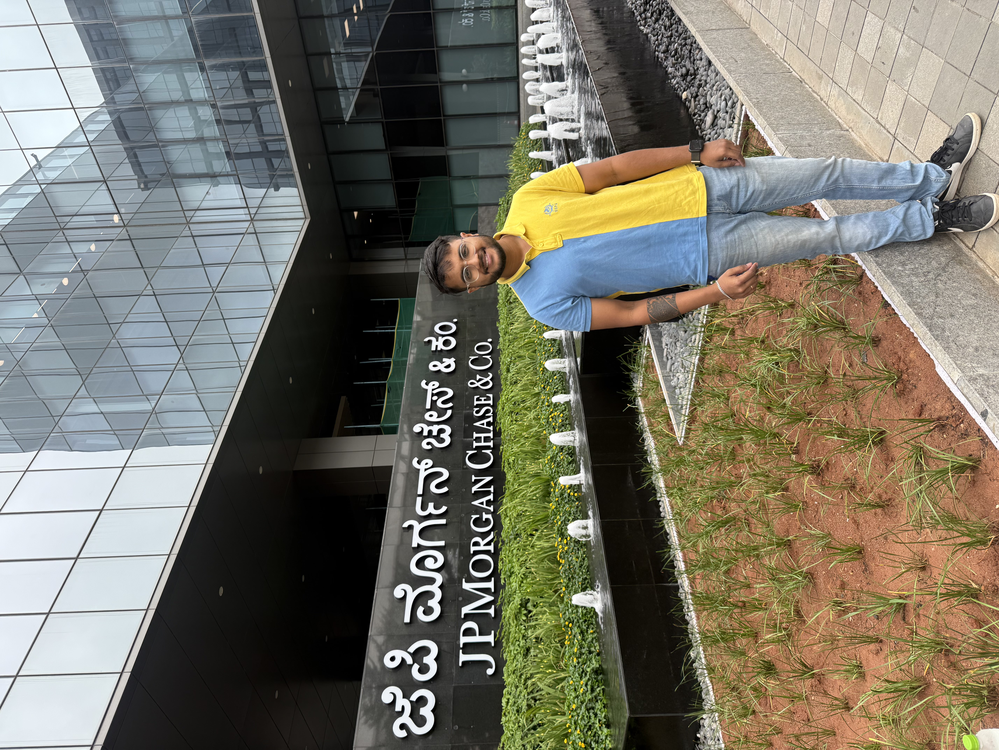

Backend Engineering • DSA • System Design
Building scalable, real-world systems.

Building Paze digital wallet. Designed Kafka retry pipelines, optimized SQL audits, and scaled recovery flows for wallet provisioning.
Real-time device communication using Kafka (MSK), Redis, Spring Boot APIs, and Grafana monitoring.
Microservices migration, Kubernetes deployments, SNMP + Fluentd enhancements, ML speech transcription POCs.
Centralized logging using Fluentd, Elasticsearch & Kibana.
Real-time voice call scam detection deployed globally.
CNN-based emotion analysis for schizophrenia patients.
Research using Inception ResNet & Xception architectures.